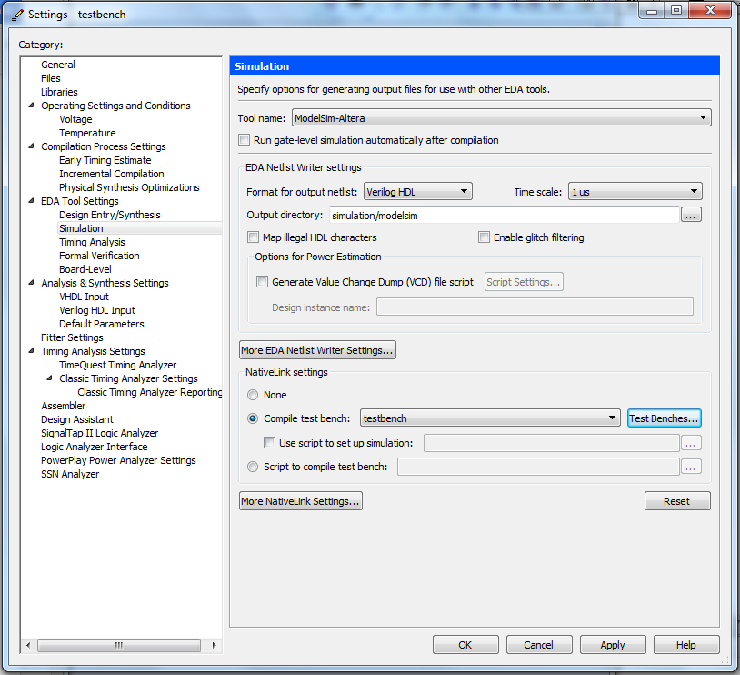
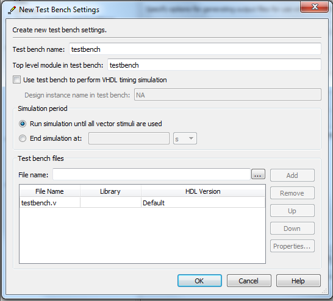

The Quick and Dirty Guide to Using ModelSim with Quartus -- Julie Wang 2014
Modelsim is a powerful tool used to simulate Verilog or VHDL code that you have written.
This is a quick and dirty guide to getting modelsim working with Quartus. The main points are underlined and numbered. If you want more tips and tricks read the additional comments. I have tried to only include what is useful. The code for the example is here.
Step 1: Write a Testbench in Verilog/VHDL
- Write a testbench. Example here: testbench.v
- Some key components of a testbench module:
- timescale indicates what the length of a “tick” is and the resolution of “ticks”
- e.g.
`timescale 1ns /1ps
#22
#22.001
#22.0001
- Because of `timescale 1ns/1ps, #22 will be translated to 22 ns
- Because of `timescale 1ns/1ps, max precision of 1ps, or .001 ns. So #22.001 will be simulated as 22.001 ns. #22.0001 will be simulated as 22.000 ns
- If you want to speed up your simulation, make the resolution lower. Note you can never have a resolution that is lower than the length of the tick though
- Create your clocks and drive them. Don’t forget to initialize them. Since testbenches are usually not synthesized, you can use initial blocks.
- Create inputs for the device under test (DUT), usually reset, play, input(s), output(s), etc.
- Instantiate the unit you’re testing.
Tips and Gotchas
- M4K blocks are simulated as having registered outputs
- Modelsim can only simulate modules that you have the verilog files for.
- I like to put in some form of index that correlates with clock ticks. Very helpful when tracing signals
Step 2: Connect testbench to Quartus
- Assignments > Settings > EDA Tool Settings > Simulation
- Tool name: ModelSim- Altera
Format for output netlist: The language you wrote the testbench in. For us, Verilog HDL
Timescale: `timescale 1ns / 1ps. The first number in `timescale directive
- NativeLink settings (same page)
Select Compile testbench: name of the top level module (e.g. testbench)
Add the file containing your testbench module.
- Set your module as the top level module, compile. Then click Tools > Run EDA Simulation Tools > EDA RTL Simulation
Tips and Gotchas
- EDA RTL Simulation is not highlighted!
- Double check that you have applied the changes that you made with the testbench setup. Go through all the steps again
- Nativelink Error: “Can’t launch the ModelSim-Altera software -- the path to the location of the executables for the ModelSim- Altera software were not specified or the executables were not found at specified path”.
- Tools > Options > EDA Tool Options. Make sure the path to ModelSim-Altera is valid on your machine! Example path: C:/altera/10.0/modelsim_ase/win32aloem
- ModelSim won’t open! You can only have one instance of ModelSim open at a time on the university license. One day if you work for a company that cares you can have multiple licences and thus multiple Model-Sim windows running at once

Settings Page after you have set up your testbench

Adding the testbench module and .v Verilog file
Using Modelsim:
Modelsim is a powerful tool that can be used at multiple levels. These are just a few of the things you can do with ModelSim
Adding Signals
- In the Panel “sim” you can see all of the modules you have in your test bench. By selecting a signal, you can see all of the internal signals in the “Objects” panel. Drag and drop signals into the wave panel
- You can expand any multiple bit signal to look at a particular bit
- Tip: Insert Dividers between signals to keep track of multiple modules. Right click in gray area of the Wave panel. Insert Divider
Manipulating waveforms
- Represent a value as signed, unsigned, hex, ascii, and more. Right click signal in the Wave panel > Radix > select what you want
- Represent values as an analog value. Right click signal > Format > Analog (custom/automatic)
- Colors! Right click signal > Properties > Wave Color Colors…> Apply
Saving and loading Waveform setups
- So you’ve made a beautifully formatted waveform. Hit the save button (top left) and you can save it for later. Loading it discussed below
Command line functions
The real power of Modelsim lies in your ability to create .tcl scripts and run them quickly. Quartus automatically generates these, and you can play around with it. Located in: simulation/modelsim/. Example path: “C:\julie\simulation\modelsim\testbench_run_msim_rtl_verilog.do”.
By doing this you don’t need to recompile Quartus and run Modelsim, you can just continually edit this file and run more ModelSim simulations. It is useful though, if you are adding new modules, to just have Quartus automatically link everything up. All of the commands below can be run through the transcript window
- do testbench_run_msim_rtl_verilog.do : recompiles the simulation files that Quartus created.
- do C:/julie/wave.do : recreates all of the waveforms that you made earlier
- restart -f : restarts the simulation so new signals that you added will have values
- run 10ms : Run the simulation for 10 ms. Can do 1 ps, 1 ns, 1ms. Doesn’t like 1 s, but can do 1000 ms
Navigation
- Zoom in, Zoom Out, Zoom global, Zoom on cursor
- Go to previous/next falling edge, previous/next rising edge, any edge at all
Tips and Gotchas
- You can edit files in ModelSim, and they will be updated in Quartus